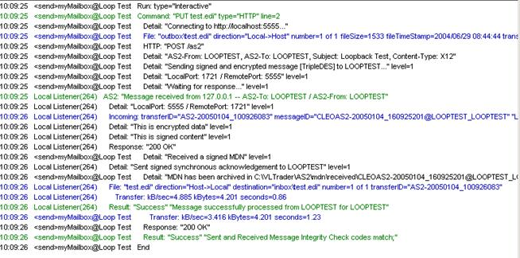

Before you attempt to have a trading relationship with a partner, you should
successfully test and validate that you can and receive messages at your local
installation. This helps you narrow down connectivity issues caused by firewall problems
and not by improper installation and configuration.
- The AS2-To and AS2-From must have the
same values in order for the file being sent to be properly stored in your configured
Inbox. (Refer to the Loop Test General tab for current Inbox
settings.)
- Verify that the encryption certificate defined on the Local Listener panel
(Encryption Certificate Alias) matches the one defined in the Trading Partner's
Encryption Certificate field on the Loop Test
Certificates tab.
- Verify that your Local Listener is running.
- If you've chosen asynchronous SMTP delivery or Forward MDN to Email, verify you have
provided a valid email address in the Email Address field on
the mailbox AS2 tab.
- Click the green arrow on the toolbar in the Action tab to run
the test command. Messages similar to the ones shown below appear in the messages
pane in the lower portion of your Cleo Harmony application.

This transaction log describes the following events that occurred when the command was
executed:
- The command PUT test.edi was invoked
- The file (test.edi) was sent to from the outbox\ directory
under the Cleo Harmony directory tree
- The file was assembled into a message that was both signed and encrypted using the
TripleDES encryption method
- The AS2-From and AS2-To headers were
both set to LOOPTEST
- The received message was identical to the message that was sent (signified by
matching MIC codes)
- An MDN was received and was stored in the mdn\ subdirectory
under the Cleo Harmony directory tree